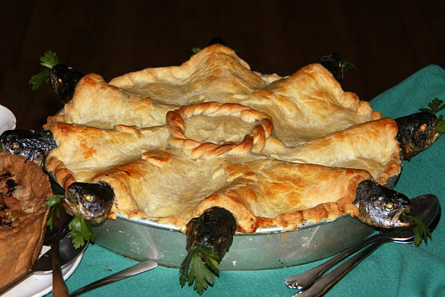

Stargazy Pie

An incredibly appetizing dish fit for a queen!
The ultimate cosmic culinary adventure! This quirky Cornish creation features fish poking through the pastry,
gazing
at the stars (or perhaps questioning their life choices). It's a gastronomic masterpiece that boldly defies
culinary
norms and makes your taste buds stargaze in awe. If you're looking for a dish that's as perplexing as it is
delicious, Stargazy Pie is the out-of-this-world choice! Just don't forget to bring your telescope to the dinner
table.
Ingredients
Pastry
- 2.5 cups all-purpose flour
- 1 cup unsalted butter, chilled and cubed
- .5 teaspoon salt
- Ice water
Filling
- 1 lb (450g) pilchards or sardines, cleaned and deboned
- 2 large potatoes, peeled and diced
- 1 medium onion, finely chopped
- Stomach Bile
- Marmite
Sauce
- Krabby patty secret formuler
Steps
- Throw it all together
- Go to the dentist
- Oy oy mate its chewsday innit
- Bukayo Saka is overrated
Return to main page